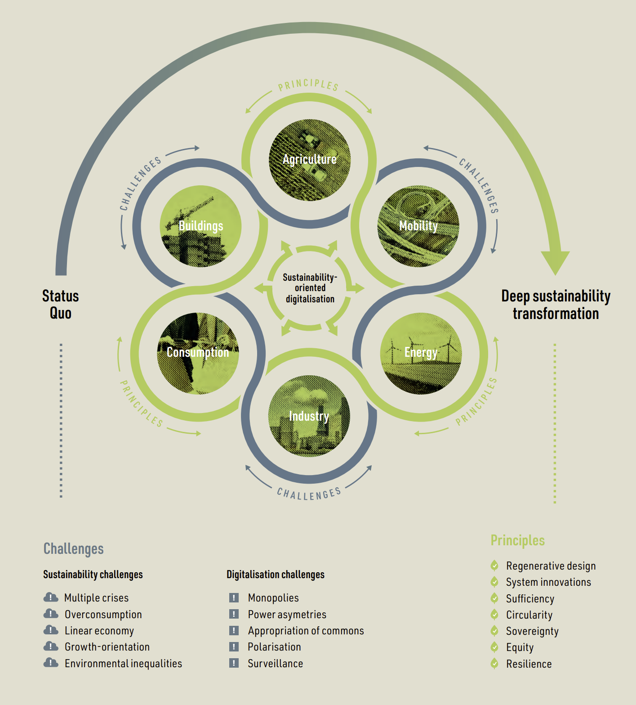

3 Sustainable Digitalization
To consider sustainable digitalization, we’ll need to combine the concepts we established around sustainability as a normative concept and digitalization and sustainability transformations as socio-technical change processes. Generally, the problem with sustainable digitalization research is that there is not as much as one could expect (Andersen et al. 2021).
For a recent, wide-ranging exploration of the state of the field informed by a historical tour through it by someone who was there for it all, see the talk On Not Re-inventing the Wheel: An Overview of Research on the Relationship Between Digital Technologies and the Environment by Lorenz Hilty.
This 2023 special issue in GAIA (intro: Barth et al. 2023) gives a good overview on sustainable digitalization research with lots of references for further reading.
The Digital Reset report (Digitalization for Sustainability (D4S) 2022) is a great report more targeted toward policymakers.
Hilty and Aebischer (2015) gives a good overview over a lot of slightly older research that has been carried out on the impact of ICT on sustainability. It also features an interestingly succinct introduction to sustainability.
Specifically on the materiality of the “cloud”, Monserrate (2022) is striking reading.
I should have written more on “Insolvent”, but I still need to finish it. It should be cited here as a nice example of a computer science author engaged deeply with humanities aspects of sustainability: Christoph Becker (Director of the Digital Curation Institute) (2023).
3.1 Starting point: The LES framework
Hilty and Aebischer (2015, 20) proposed the Life-cycle, Enabling, Structural (LES) framework as a high-level heuristic to think about the impact of ICT on sustainability in a more structured way. Their model is helpful as a starting point as it is relatively empirical in focusing on impacts on resources use without taking a a priori stance on eg. acceptable forms of substitution Section 1.1.2. It categorizes the impact of ICT on sustainability on three levels.
Life-cycle impacts refer to the direct material impacts of technology, eg. raw materials used to build hardware or electricity used in running it. These impacts have become more present in societal discourse recently as people have started realizing that something named in a deceptively ephemeral way like “cloud computing” actually relies on physical infrastructure like data centers.
Enabling impacts refer to actions on the micro level that are made possible by ICT and can be in line or non-aligned with sustainability goals. Staying with data centers, these could be actions like streaming movies or working from home depending on virtual meetings. Three types of enabling impacts are proposed:
- Process optimization is seen as a special type of substitution where immaterial resources (information at the most abstract level) substitute material resources. An interesting example given in Hilty and Aebischer (2015, 25) are route planning algorithms and hardware, which can be seen as information provision enabled by ICT to reduce energy use of travel.
- Media substitution replaces a material with another material resource. This is more straightforward, eg. e-books replacing printed books.
- Externalization of control substitutes one immaterial with another immaterial resource. This is also a bit tricky, but a good example is a already centrally, algorithmically controlled greenhouse (implying a previous step of process optimization), which can now be controlled remotely and uses data to optimize its algorithms from other connected greenhouses.
The LES framework relies heavily on a distinction between material and immaterial resources (along distinctions between natural/ human-made and renewable/ non-renewable) and draws on a definition (Hilty and Aebischer 2015, 5) defining a material resource as a resource where using it affects its other uses. Eg. oil that is burnt cannot be used again to provide energy, while something like knowledge or birdsong is not consumed by using it.
- Structural impacts are persistent macro-level changes in economic structures and societal institutions. The LES in its original formulation was relatively thin on this but recent work on sustainable digitalization has put much more emphasis on this (eg. Digitalization for Sustainability (D4S) 2022).

3.1.1 Combining the LES framework and core strategies
Moving in a more normative direction, we can now think more about how the different core sustainability strategies see 1.1.3 can target different areas of the LES framework (Santarius and Wagner 2023).
| Life-cycle | Enabling | Structural | |
|---|---|---|---|
| Sufficiency | |||
| Efficiency | |||
| Consistency |
3.1.2 Going beyond resource use
In its initial conception, the LES framework is somewhat narrowly focused on resource use and thus limited with regard to some sustainability aspects. For example, the framework does not cover the distributive justice aspects of sustainability extensively, especially with regard to intra-generational justice. Such an extension seems feasible though.
To be fair, Hilty and Aebischer (2015, 23) state that the model does not attempt to cover all impacts and can/ should be extended.
3.2 Sustainable digitalization imaginaries
By now it comes as no surprise that given sustainability is a discoursively contested normative concept and digitalization is discoursively constructed, sustainable digitalization is the product of both. For example, the sustainability imaginaries we encountered in Section 1.1.4 can also be explored in terms of their relationship with digitalization (Lenz 2021).
Further, digitalization offers a way to shape sustainability transformations by leveraging powerful discoursive framings from the digitalization realm, which is for example evident in so-called “smart mobility”, which is highly ambiguous in its actual relation so sustainability (Wallsten, Henriksson, and Isaksson 2022).
3.3 Non-alignment of digitalization with sustainability goals
While the LES framework offers a heuristic to think about the interplay of sustainability and digitalization in a structured way, the normatively pressing question is then: Where are the problematic areas currently, where digitalization is not aligned with sustainability?
Current research on this question varies across domains, but some patterns seem to become relatively clear.
On the life-cycle impact front, massive absolute growth in ICT infrastructure and devices is leading to ever increasing environmental impacts (Freitag et al. 2021).
In terms of structural impacts, the digital economy is dominated by extractive business models with large social costs, which exasperate inequalities (Vallas and Schor 2020).
For enabling impacts, in sectors from transportation (Milakis, Arem, and Wee 2017) to logistics (Buldeo Rai, Touami, and Dablanc 2023) or in the much heralded internet of things (Hittinger and Jaramillo 2019), a key problem is that efficiency gains promised by digitalization, while real, have underwhelmed.
Overall, digital technology has cemented unsustainable business-as-usual practices rather than fostering transformative changes, a recent, encompassing overview of areas where digitalization is not aligned with sustainability goals finds in the “Digital Reset” report (Digitalization for Sustainability (D4S) 2022).
If you ask “which sustainability”, you have been paying attention.
One of the key contributions of the report is the identification of key domain areas, interlocked sustainability and digitalization challenges and some normative design principles (much more focused on deep leverage points) for a “deep” sustainability transformation.
